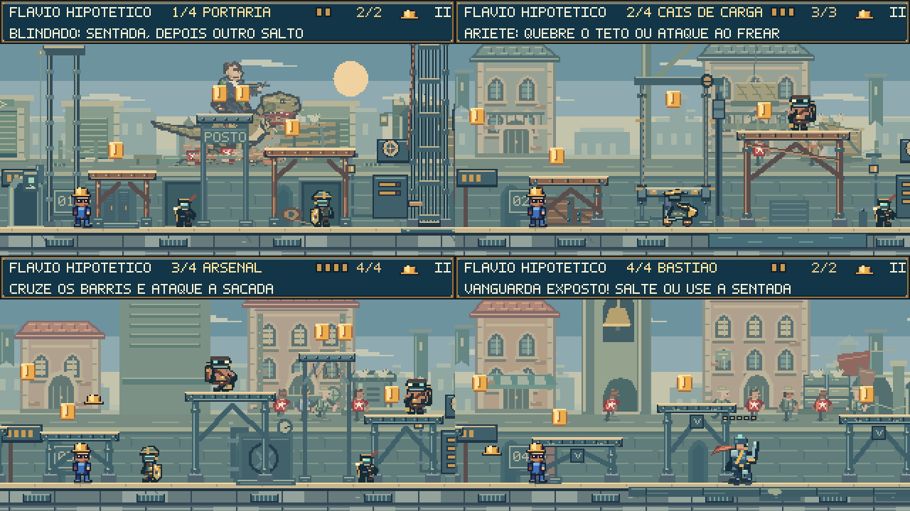
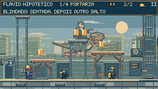
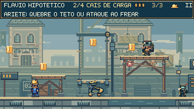
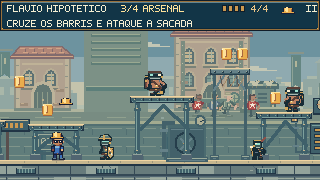
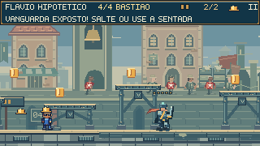
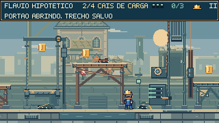
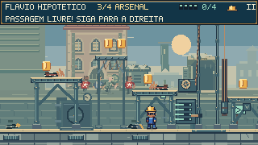

Quatro pátios.
Mais caminhos para lutar.
O posto de inspeção, o cais, o arsenal e o bastião ganharam construção própria no primeiro plano. Novos apoios e um monta-cargas abrem alternativas para atravessar o combate; máquinas e sinais respondem à liberação do caminho.
Jogar o encontroVer mecanismos em movimento
Portaria: observar e subir.
A cobertura do posto conecta os apoios de madeira. Ela oferece uma aproximação por cima do blindado, enquanto a estrada mantém o confronto direto. Armários, mãos-francesas, cordas e uma placa dão função ao lugar.

Cais: embarcar e flanquear.
O monta-cargas sobe, freia e espera nas duas extremidades. As correntes, a roldana e o contrapeso acompanham o transporte real. Caixas e amarrações ficam recuadas, preservando a leitura do aríete e dos barris.

Arsenal: escolher a altura.
Uma galeria liga as sacadas e cria outro ângulo contra os lançadores. A ventilação funciona durante o confronto e desacelera quando ele termina. O ponteiro perde pressão e o vapor desaparece gradualmente.

Bastião: espaço para responder.
Os reforços de alvenaria enquadram os flancos. O centro permanece livre para cruzar as investidas da Vanguarda, e os quatro apoios continuam oferecendo alternativas contra a cobertura do lançador.

O cenário muda depois da vitória.
Os sinais passam a indicar saída livre. O vapor e a poeira cessam, o ventilador para, e o local mantém o estado concluído. O monta-cargas continua disponível para explorar o cais.
Estudo de cenário, sem combate ou áudio. A liberação aos dois segundos é dirigida para observar os mecanismos. Não comprova o balanceamento. O modo de movimento reduzido desliga os novos efeitos decorativos e preserva o movimento físico necessário ao jogo.
Acabamento que ajuda a jogar.


As bordas claras continuam marcando os apoios utilizáveis. A decoração tem contraste menor que personagens e perigos. Os barris agora são desenhados à frente das estruturas, para que uma travessa ou caixa não esconda um ataque.
Publicação conforme as instruções do projeto: build de produção, sem testes, typecheck ou revisão no navegador. A dificuldade das novas rotas ainda precisa ser observada em partidas.
Geometria, decisões e limites da revisão · Enquadramentos de autoria · Atividades no fundo